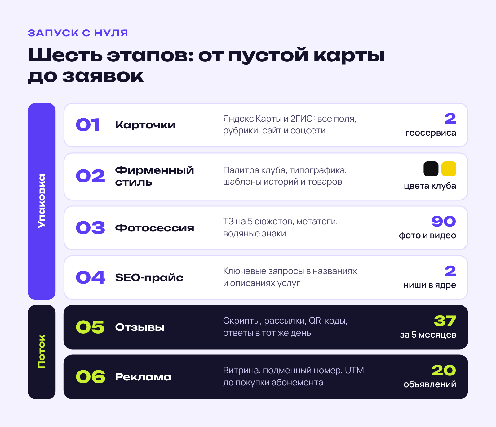
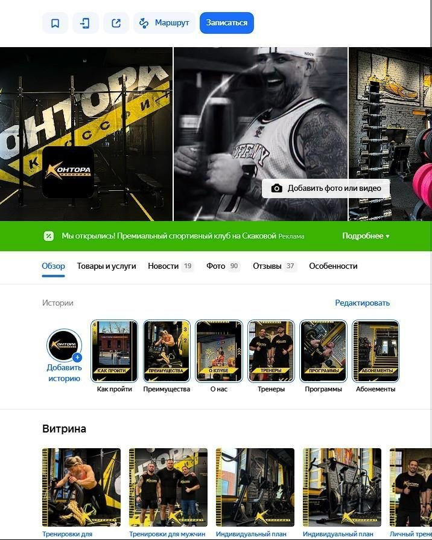
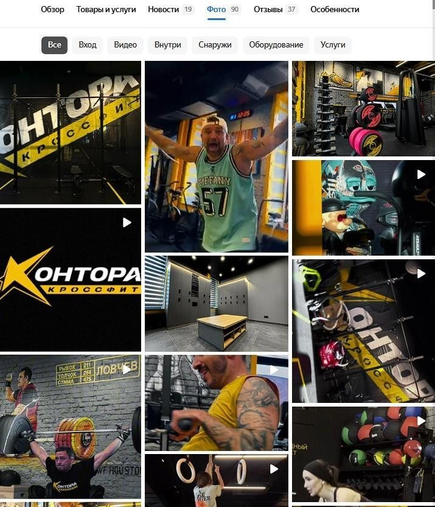
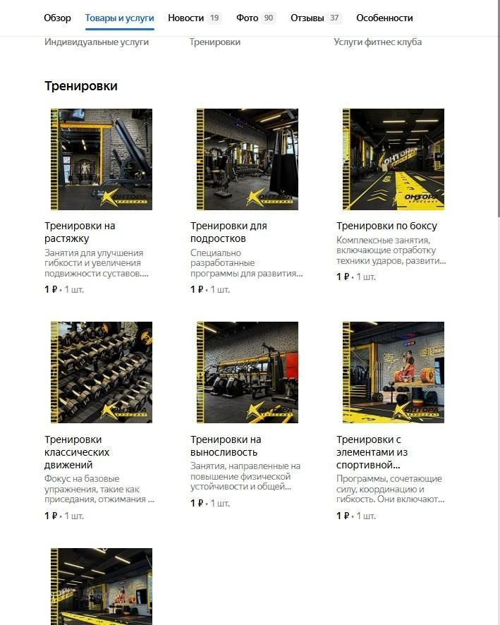
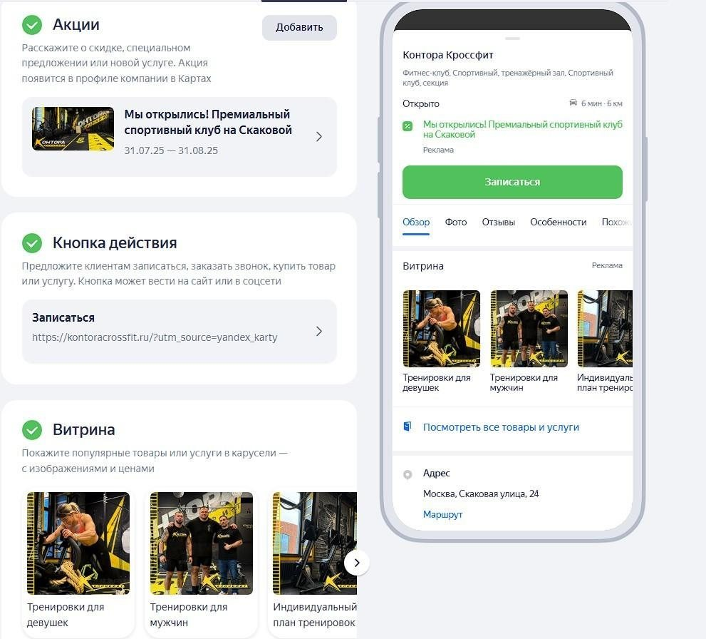
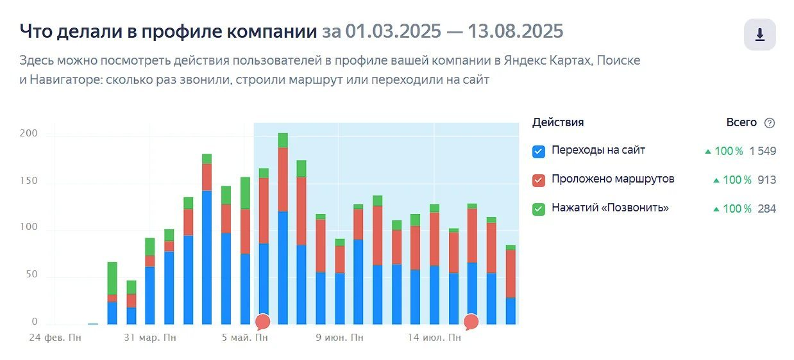
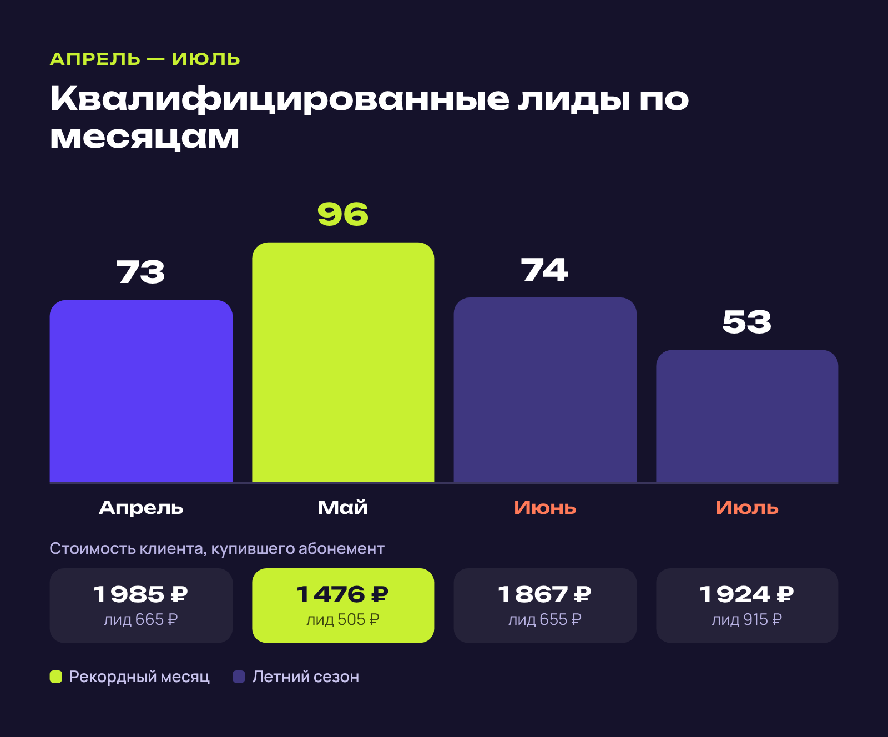

360-DIGITAL · Кейс · фитнес
Кейс агентства геомаркетинга: запуск премиум кроссфит-клуба с нуля
О заказчике360-DIGITAL (360-digital.ru) — агентство геомаркетинга из Санкт-Петербурга: продвигает локальный бизнес в Яндекс Картах, 2ГИС и Google Maps, работает с отзывами и репутацией компаний в геосервисах.
Задача
Показать, как запустить поток клиентов с геосервисов для нового премиум кроссфит-клуба с нуля и удержать продажи абонементов летом. Превратить статистику по месяцам в убедительный кейс для владельцев фитнес-клубов.
Решение
Разложила работу на шесть последовательных этапов — от создания карточек до рекламы в Яндекс Бизнесе, — к каждому дала конкретику (90 фото и видео, 37 отзывов, 20 объявлений). Результаты подала через воронку «целевое действие — квалифицированный лид — клиент» с помесячной таблицей и объяснением, почему лид в премиуме дороже. Добавила две инфографики: этапы запуска и помесячную динамику лидов со стоимостью клиента.
Результат
Кейс с шестью скриншотами, таблицей воронки по месяцам и двумя инфографиками; акцент — на стабильности канала в летний сезон (53–74 квалифицированных лида в июне–июле).
Как привлечь 96 квалифицированных лидов за месяц для премиум кроссфит-клуба с нуля
Кейс 360-DIGITAL: продажа абонементов через геосервисы без сезонных просадок — от пустой карточки до 53–96 квалифицированных лидов в месяц, в том числе летом.
К нам обратился владелец успешного кроссфит-клуба: он открывал второй клуб, уже в премиум-сегменте, и хотел с первых месяцев обеспечить стабильный поток платёжеспособных клиентов. Мы уже работали с этим предпринимателем — выстроили для его первого клуба системный канал привлечения через геосервисы. Поэтому маркетинг нового проекта он доверил нашей команде.
Главная особенность проекта — старт с нуля. Ни старых карточек, ни накопленных отзывов, ни истории: чистый лист и высокая планка. Поэтому кейс показывает весь цикл работ — от появления клуба на картах до десятков квалифицированных заявок каждый месяц.
Что мы сделали: пошаговая стратегия запуска
Работу разбили на шесть последовательных этапов. Каждый опирается на предыдущий: реклама без упаковки сливает бюджет, а упаковка без отзывов не вызывает доверия.

Первые четыре этапа — это упаковка: клуб должен выглядеть на картах так же, как в жизни. Последние два отвечают за доверие и поток заявок.
Этап 1. Карточки организации
Первым делом мы зарегистрировали и верифицировали карточки клуба в Яндекс Картах и 2ГИС. Это фундамент: без грамотно оформленной карточки бизнес не видят те, кто ищет фитнес поблизости.

Карточка — первое касание с потенциальным клиентом. Часто человек принимает решение о визите, даже не заходя на сайт: по фото, отзывам, ценам и графику работы. Поэтому при создании карточек мы:
- заполнили все доступные поля максимально подробно;
- указали точные часы работы и актуальные контакты;
- добавили все релевантные категории и рубрики;
- привязали официальный сайт и социальные сети.
Полная карточка лучше ранжируется и сразу отвечает на вопросы, с которыми человек приходит в поиск: где, когда и сколько стоит.
Этап 2. Фирменный стиль для геосервисов
Премиум-сегмент требует соответствующей подачи. Мы с нуля разработали единый визуальный стиль карточек: взяли фирменные цвета клуба — чёрный и жёлтый, — определили типографику, создали шаблоны для историй и товаров.
Визуальная целостность формирует доверие и выделяет клуб среди конкурентов: в выдаче карточка сразу считывается как премиальная.
Этап 3. Фотосессия по нашему ТЗ
Качественный визуал — один из главных факторов конверсии на картах. Мы составили подробное техническое задание для фотосессии, которое охватывало все ключевые сюжеты:
- входная группа — первое впечатление о клубе;
- экстерьер — локация и окружение;
- интерьер — залы, оборудование, раздевалки;
- тренерский состав — профессионалы, которые работают с клиентами;
- тренировки — атмосфера и энергетика занятий.
Полученные снимки мы оптимизировали: прописали метатеги с ключевыми словами, нанесли фирменные водяные знаки. Это повышает видимость изображений в поиске и защищает контент от копирования.

Профессиональные фото — это инвестиция, а не расход. Люди охотнее открывают карточки с качественными снимками, чем с любительскими или вовсе без фото, а для премиум-клуба картинка — часть обещания, за которое клиент платит.
Этап 4. SEO-оптимизированный прайс-лист
Прайс-лист на геосервисах — не просто перечень услуг и цен, а инструмент SEO-продвижения. Каждая позиция может приводить людей из поиска, если она названа так, как её ищут.

Мы собрали семантическое ядро по нишам «кроссфит» и «фитнес премиум-класса» и встроили ключевые запросы в названия и описания услуг. Теперь каждая позиция прайса работает на видимость карточки.
Этап 5. Система сбора отзывов
Отзывы — главный источник доверия к новому бизнесу. Клубу без истории нужно было быстро набрать базу реальных положительных откликов, поэтому мы выстроили систему из трёх инструментов:
- Скрипты для администраторов — как мотивировать клиентов делиться впечатлениями.
- Автоматические рассылки после тренировок — с просьбой оставить отзыв.
- QR-коды в клубе — для мгновенного перехода на страницу отзывов.
Со своей стороны мы обрабатываем каждый отзыв оперативно, как правило в тот же день. В ответы добавляем ключевые слова — это дополнительно усиливает позиции карточки в выдаче.
37 отзывов за 5 месяцев — серьёзный показатель для нового клуба. Каждый реальный отзыв повышает доверие и улучшает ранжирование карточки в геосервисах.
Этап 6. Реклама в Яндекс Бизнесе
После упаковки карточек мы запустили рекламное продвижение. К этому моменту клубу было что показать: фирменный стиль, фотографии, прайс и первые отзывы.

В комплекс работ по рекламе вошли четыре задачи. Две отвечают за саму кампанию, две — за то, чтобы её результат можно было точно измерить:
- Настройка товарной витрины с акцентом на конверсионные предложения.
- Создание 20 уникальных рекламных объявлений с разными офферами.
- Подключение подменного номера для точного учёта звонков.
- UTM-метки для сквозной аналитики — вплоть до покупки абонемента.
Благодаря UTM-меткам и подменному номеру мы видим весь путь клиента: от первого контакта с карточкой до покупки абонемента. Это позволяет точно считать окупаемость и масштабировать то, что работает.
Результаты за 5,5 месяца
За время работы карточку клуба просмотрели 21 057 раз: с нуля посещаемость выросла до 2 000+ просмотров в пиковые недели.
Просмотры превратились в действия: 1 549 переходов на сайт, 913 построенных маршрутов и 284 звонка. Всё это — с карточки, которой полгода назад не существовало.

Помесячная статистика показывает главное — стабильность канала даже летом, в традиционно «мёртвый» для фитнеса сезон.
Статистика по месяцам
В таблице — путь от целевого действия в карточке до купленного абонемента. Видно, сколько стоил каждый шаг воронки в каждом месяце:
| Период | Целевые действия | Стоимость ЦД | Квал. лиды | Стоимость лида | Стоимость клиента |
|---|---|---|---|---|---|
| Апрель | 579 | 110 ₽ | 73 | 665 ₽ | 1 985 ₽ |
| Май | 759 | 83 ₽ | 96 | 505 ₽ | 1 476 ₽ |
| Июнь | 498 | 127 ₽ | 74 | 655 ₽ | 1 867 ₽ |
| Июль | 528 | 120 ₽ | 53 | 915 ₽ | 1 924 ₽ |
Лучшим месяцем стал май: 96 квалифицированных лидов на третьем месяце работы клуба и самый дешёвый клиент за весь период — 1 476 рублей.
Что стоит за этими цифрами
На первый взгляд квалифицированный лид стоит недёшево — от 505 до 915 рублей. Но это премиум-сегмент: абонемент здесь дороже среднего по рынку, а аудитория объективно уже, чем у масс-маркета. Отсюда и стоимость привлечения.

Главное достижение — стабильность. В июне и июле большинство фитнес-клубов фиксирует спад продаж: отпуска, тренировки на улице. А наш канал продолжал приносить 53–74 квалифицированных лида в месяц. Для клуба это предсказуемая загрузка и стабильный денежный поток.
Что делаем дальше
Запуск и упаковка — только начало. Вместе с клиентом мы разработали долгосрочную стратегию развития канала. Ключевые направления на ближайшие месяцы:
- Управление репутацией — поддерживать высокий рейтинг, отрабатывать негатив, наращивать базу отзывов.
- Контент-маркетинг — регулярно публиковать новости, акции, истории клиентов клуба.
- Оптимизация рекламы — A/B-тесты, корректировка ставок, масштабирование работающих связок.
- Сезонные активности — вовремя обновлять акции и спецпредложения.
- SEO-мониторинг — отслеживать позиции по ключевым запросам и быстро реагировать на изменения выдачи.
- Новые каналы — подключать дополнительные площадки экосистемы Яндекса.
- SERM — укреплять бренд и работать с упоминаниями на внешних площадках.
- Масштабирование — увеличивать бюджеты на каналы с доказанной эффективностью.
Геомаркетинг — это марафон, а не спринт. Первые месяцы закладывают фундамент. Потенциал канала раскрывается при системной работе: накопленные отзывы, отточенные объявления и растущий рейтинг со временем снижают стоимость привлечения и увеличивают поток клиентов.
Выводы
Кейс подтверждает четыре принципа, на которых мы строим работу с локальным бизнесом:
- Геосервисы — полноценный канал продаж, а не онлайн-справочник. При системном подходе они дают стабильный поток «горячих» клиентов.
- Комплексная работа даёт синергию. SEO, визуальный контент, отзывы и реклама усиливают друг друга.
- Премиум-сегмент окупается. Лид стоит дороже, но и клиент приносит клубу больше за время абонемента.
- Сезонность можно сгладить. Правильно настроенный канал работает круглый год.
Мы выполнили KPI, согласованные с клиентом. План продаж абонементов закрывается даже летом, и владелец клуба доволен результатом.
Хотите такой же результат?
Команда 360-DIGITAL продвигает бизнес через геосервисы. Мы работаем с фитнес-клубами, ресторанами, медицинскими центрами, автосервисами и другими локальными бизнесами по всей России.
Оставьте заявку — и получите:
- бесплатный аудит присутствия вашего бизнеса на геосервисах;
- анализ конкурентов и точек роста;
- прогноз количества потенциальных обращений;
- персональную стратегию продвижения.
Аудит занимает 15 минут. Мы проверим видимость вашего бизнеса на картах, оценим конкурентов и покажем, сколько клиентов вы недополучаете сейчас. Бесплатно и без обязательств.
Позвоните по номеру +7 (951) 300-61-34 или напишите в Telegram или WhatsApp слово «Аудит» — так мы быстрее поймём, с чем вы пришли. Подробнее о работе агентства — на сайте 360-digital.ru.